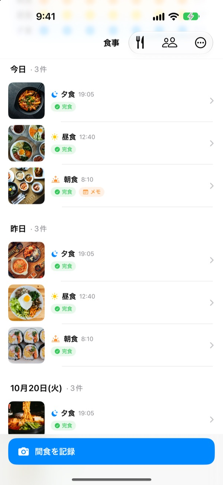
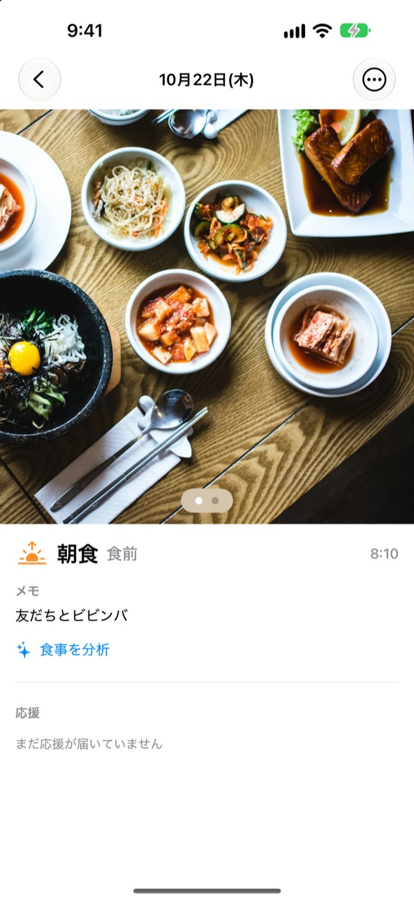
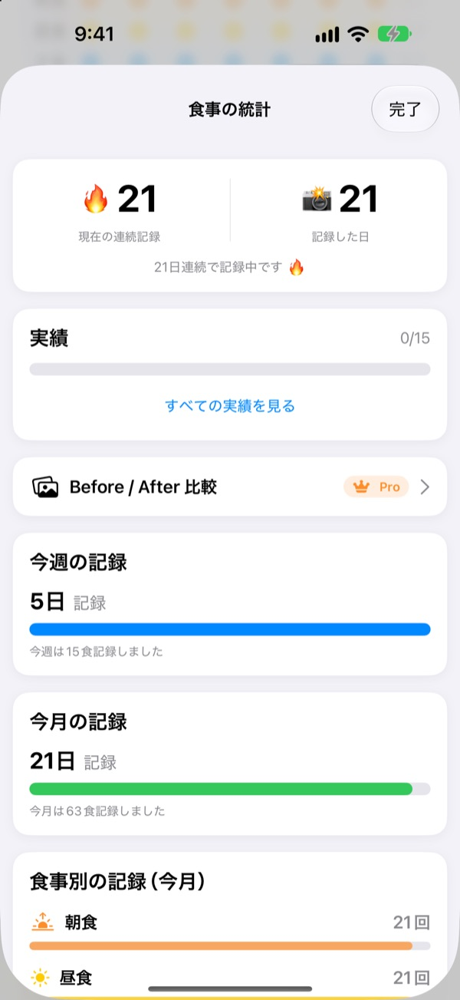
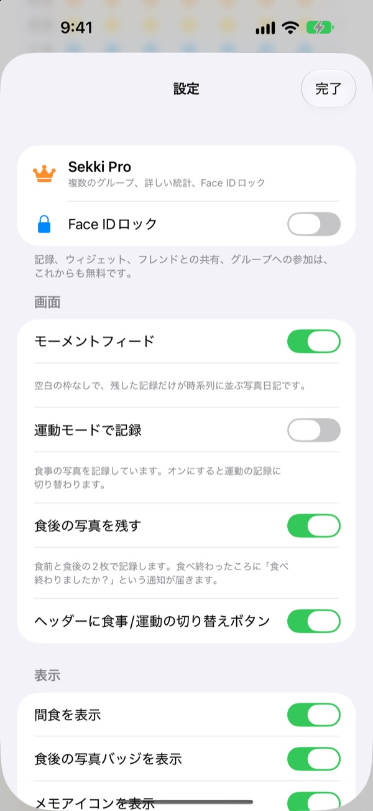

食べる前に1枚。
それで記録はおしまい
撮った時刻を見て、朝食、昼食、夕食、間食に自動で振り分けます。1日1食だけ記録しても、連続記録は途切れません。
記録、統計、ウィジェット、フレンドとの共有はすべて無料です。

撮って試してみる
撮る時刻を選んで記録ボタンを押してみてください。アプリと同じように、ボタンの名前がその時刻の食事に変わります。
食事記録、三日坊主で終わったことはありませんか
朝食を抜いた日、夕食を忘れた日が増えるほど、空欄が気になって結局アプリを消してしまう。Sekkiには空欄がありません。記録した食事だけが時間順に積み重なり、1食撮るだけでその日は記録した日になります。
撮るだけで食事が決まる
撮った時刻から朝食、昼食、夕食、間食に振り分けます。食前と食後の写真、写真なしの記録、メモも残せます。
写真の料理はデバイス上で無料で分析し、写真がiPhoneの外に出ることはありません。

抜けても減らない記録
1日1食記録すれば連続記録が続き、累計の記録日数は決して減りません。週と月の統計は達成率ではなく、何日、何食記録したかを見せます。
「7日連続」「早起きさん」などの実績も少しずつ集まります。

記録する食事だけ、アプリを開かずに
通知を受け取る食事を選び、食事の時間も自分の生活に合わせられます。食前の写真を撮っておけば、通知からそのまま完食を記録できます。
アクションボタン、Siri、ショートカット、ホーム画面のウィジェットからも記録でき、フレンドコードで友だちを追加して絵文字やコメントで応援し合えます。

始めるのは3ステップ
- 1
記録する食事を選ぶ
初めて開くと、通知を受け取る食事を尋ねます。あとから設定で変えられます。
- 2
食べる前に1枚撮る
記録ボタンには、いまの時刻の食事があらかじめ表示されています。押して撮れば完了です。
- 3
食べ終わったらタップ
通知やウィジェットで完食を押すか、食後の写真を追加します。
アプリを開かずに記録する方法
- 通知
- 食前の写真を撮ったあとに届く通知から、そのまま完食
- ホーム画面ウィジェット
- 今日の記録数と食事中の食事を確認し、完食ボタンを押せます
- ロック画面ウィジェット
- 長方形、円形、1行で今日の記録を確認
- アクションボタン・Siri・ショートカット
- ボタンひとつ、ひとことで完食を記録
- 写真Appに保存
- 設定でオンにすると、食事と運動を別々のSekkiアルバムに保存
- 運動モード
- 運動の記録は食事とは別に集まり、今月の運動回数がひと目でわかります
ウィジェットの完食ボタンはiOS 17以降で使えます。
記録は無料。もっと深く見るならSekki Pro
無料
- 写真の記録と食事の自動振り分け、食前・食後の写真、メモ
- 連続記録、累計記録日数、週と月の統計、実績
- 記録する食事の通知と、アプリを開かない完食
- ウィジェット、アクションボタン、Siri、ショートカット
- フレンドと食事・運動を共有、絵文字とコメントで応援
- グループ1つ作成、ほかのグループへの参加は無制限
- デバイス上での料理の分析
Sekki Pro
- 家族、職場、運動仲間ごとにグループを複数
- 数週間前と今の食事を並べて比較
- よく食べた料理をまとめて表示
- Face IDやTouch IDでアプリをロック
年間・月間のサブスクリプション、または一度の購入で使える買い切り
サブスクリプションは期間終了の24時間前までに解約しない限り自動更新されます。設定App > Appleアカウント > サブスクリプションからいつでも解約できます。利用規約：m1zz.github.io/RoutineCamera/ja/terms.html
よくある質問
写真はどこに保存されますか？
デバイスの中に保存されます。設定で「写真Appに自動で保存」をオンにすると、写真AppのSekkiアルバムにも保存されます。「食事を共有」がオン（最初はオン）のときは、フレンドが見られるようにiCloudにアップロードされます。設定 > アカウントと共有でオフにできます。
フレンドはどうやって追加しますか？
フレンド画面で自分の6文字のコードを共有し、相手のコードを入力します。複数のコードをカンマで区切って一度に貼り付けることもできます。
フレンドを応援するには？
フレンドの食事を開いて、絵文字や短いコメントを残せます。まだ記録していない食事は、空いた枠をタップすると軽くつついて記録を促せます。
1食抜けると連続記録は途切れますか？
いいえ。間食を含めてその日に1食でも記録すれば、連続記録は続きます。1日まるごと抜けても、累計の記録日数は減りません。
通知が届きません。
iOSの設定 > 通知でSekkiの通知が許可されているか、デバイスがiCloudにサインインしているかを確認してください。食事の通知時刻はアプリの設定で変えられます。
料理の分析で写真がサーバーに送られますか？
いいえ。デバイス上で分析するので、写真がiPhoneの外に出ることはありません。回数の制限もなく無料です。
アカウントとデータを削除したいです。
フレンド > アカウント > アカウントを削除から削除できます。サーバーに保存されたアカウントと食事のデータが削除され、元に戻せません。問題があればメールでお知らせください。
サブスクリプションの解約方法は？
設定App > Appleアカウント > サブスクリプションから解約できます。期間終了の24時間前までに解約しない限り自動で更新されます。買い切りは一度だけのお支払いです。
不具合の報告、機能のご要望、アカウントについてのお問い合わせは leeo@kakao.com またはInstagramの @lee25_ios へのDMでどうぞ。ふだんは1〜2日以内にお返事します。